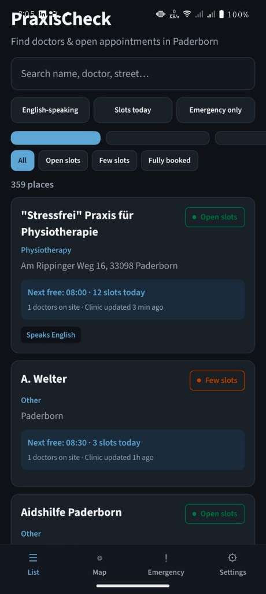
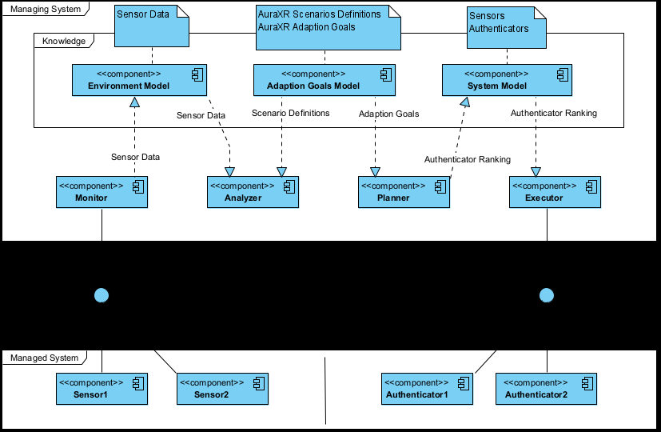

Pauravi Pardeshi
Projects that show what I can build — mobile, VR security, and web.
M.Sc. Computer Engineering (Embedded Systems), Paderborn University. This portfolio is built from my public GitHub work: live demos where possible, clear stacks, and the problems each project solves — so you can skim like a recruiter and still see depth.
60-second read
Software, IT, web/mobile, AI & VR
M.Sc. Computer Engineering (Embedded Systems), Paderborn University — about three years across software and IT: Unity/C# VR at VirtuChemLab/VirtuTutor (LLM & RAG tutoring), GenAI prototypes at Fraunhofer IEM, enterprise service desk in India, plus shipped mobile and client web in my public repos.
- Mobile product PraxisCheck: TypeScript/React Native (Expo) — GP & specialist search in Paderborn, map + list, EN/DE UI, themes, Android APK via EAS.
- VR & security ADA-VR: Unity Quest sandbox, MAPE-K adaptive auth; Head Reverberated + sandbox integration. VirtuChemLab: Unity/C# VR teaching software, testing before live university sessions.
- AI & LLM LLM tutoring and RAG-style context at VirtuTutor; Python GenAI/LLM prototypes and partner demos at Fraunhofer IEM; explainable risk UI in the public Next.js VR security demo.
- Web & delivery Production German client sites (SESA), static generators, legal pages, GitHub Pages/Vercel; also led a browser WebRTC audio/video team project (JavaScript, real-time UI).
Programming
Python, TypeScript, JavaScript, C#, C++, Java, HTML/CSS, object-oriented design, REST APIs
Web / mobile
React, React Native, Expo, Next.js, WebRTC, browser apps, Android builds (EAS), full-stack web, responsive CSS
AI / VR
LLM integration, RAG-style retrieval, GenAI prototypes, Unity, Meta Quest / OpenXR, 3D/VR prototyping, PyTorch (basics), VR security research
Data & tools
SQL, PostgreSQL (basics), Git, GitHub, Linux, Docker (basics), Jira, Confluence, Microsoft 365, structured testing & release discipline
GitHub portfolio
Projects
Each card matches a repo under github.com/Pauravi14. Click a project for the full write-up, screenshots, stack, and links.

Mobile · Expo
PraxisCheck Paderborn
Find doctors & open appointments in Paderborn — list, map, emergency tab, EN/DE.
View project
Unity · Quest · Security
ADA-VR
Adaptive authentication in VR — Head Reverberated & sandbox integration (MAPE-K).
View project
Next.js · Live demo
AI VR Security Assistant
Interactive risk scoring demo for long-lived VR sessions.
View project
Client web · Production
SESA KFZ-Sachverständigenbüro
Official German static site for an automotive expert practice.
View projectTechnical skills
What I work with day to day
Grouped the same way as my CV — programming foundations, shipping web and mobile, AI/VR research prototypes, and the tooling I use in university and industry roles.
Programming
- Python, TypeScript, JavaScript, C#, C++, Java
- HTML/CSS, object-oriented design
- REST APIs and structured testing
Web / mobile
- React, React Native, Expo, Next.js (App Router)
- WebRTC P2P browser apps (team lead experience)
- Android builds (EAS), maps, i18n, semantic HTML/CSS
- Client static sites: Python generators, GitHub Pages, Vercel
AI / VR
- LLM integration, RAG-style retrieval, GenAI prototypes (Fraunhofer IEM)
- Unity / C# — VirtuChemLab VR, ADA-VR Quest sandbox
- Meta Quest, OpenXR, Sentis, adaptive authentication (MAPE-K, AURA-XR)
- PyTorch (basics), seminar work on static analysis / secure systems
Data & tools
- SQL, PostgreSQL (basics), Git, GitHub, Linux
- Docker (basics), Jira, Confluence, Microsoft 365
- Incident documentation, pre-release QA, demo-ready handover
Spoken languages
English (C1) · German (A2, improving) · Hindi & Marathi (native)
Based in Paderborn, Germany. Eligible to work in Germany subject to university and employer requirements.
Experience
Where this work comes from
-
Student Assistant (Software) — VirtuTutor / VirtuChemLab
Develop and test Unity/C# for VirtuChemLab (VR chemistry teaching); integrate LLM tutoring and RAG-style context retrieval; structured pre-release testing, bug reports, and Git-based collaboration with educators and CS colleagues.
-
Student Assistant — GenAI Incubator
GenAI prototypes with industrial partners — ideation through demo-ready documentation.
-
IT Service Desk / Dispatch Coordinator
Enterprise IT support, escalations, and user-facing documentation — strong operational baseline.
About
Curious builder. Clear communicator.
I’m a Computer Engineering master’s student at Paderborn University (Embedded Systems focus), with experience in software, mobile apps, Virtual Reality, Generative AI prototyping, and IT service operations. I like work that sits between research and real users — prototypes that teach, tools that help, and interfaces that stay readable.
Comfortable in international, interdisciplinary teams, and open to roles across software, IT, web/mobile, AI, and VR.
M.Sc. Computer Engineering — Paderborn University · Embedded Systems (Apr 2024 — Present)
B.E. Electronics & Telecommunication — LTCE, India (2019 — 2023 · CGPA 8.34/10)
Languages — English C1 · German A2 · Hindi · Marathi
Contact
Let’s talk
Based in Paderborn, Germany. Happy to chat about software, mobile apps, AI, VR, or the next interesting problem.